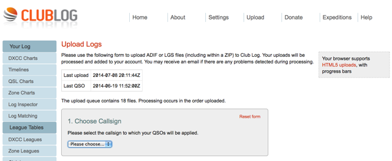

John K6MM, Thanks for the follow up on the Club Log questions from last night. I’m going to have to use that Helpdesk site more often. The Club Log team did a thorough job explaining what is going on. Even though I had seen the presentation once before and I use it daily, this one cleared up how some of the features actually work. Thanks for Club Log presentation. 73, Bob – W6OPO From: Chat1 [mailto:chat1-bounces@ncdxc.org] On Behalf Of John Miller via Chat There were two questions asked last night that needed further follow-up. Q1 (KE1B + others): For a particular QSO, what does the blue "V" mean? Answer: As discussed, the blue 'V' means you have a QSO verified after presenting the QSL to ARRL for an award. ClubLog Reference: http://clublog.freshdesk.com/support/articles/53201-what-does-the-blue-v- Q2 (NI6T): How do I check to see the date of my last QSO uploaded to ClubLog? Answer: Click on the "Upload" link. The dates & times of the Last Upload and the Last QSO are shown in a small table. See attached snapshot for K6MM. Hope this helps. 73, John, K6MM  |